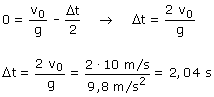

En el apartado anterior hemos obtenido el tiempo que lleva moviéndose cada piedra cuando se produce el encuentro:

En la expresión de t' se ve que al aumentar el retardo Δt disminuye t' y que llegará un momento en que este será negativo en cuyo caso no habrá choque. El caso límite corresponderá al valor de Δt que hace t' igual a cero.

Si la segunda piedra se lanza más de 2.04 s después que la primera no se encontrará con la primera (Porque esta ya ha llegado al suelo)